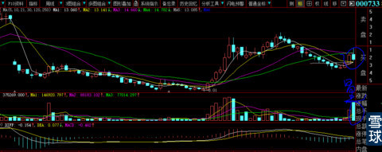
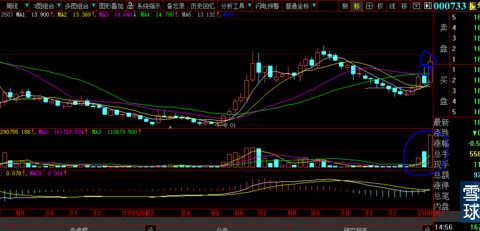
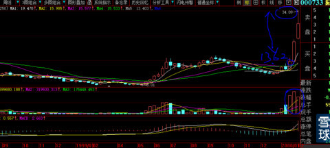
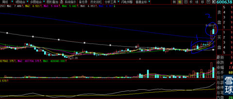
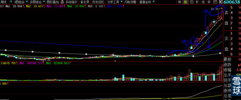
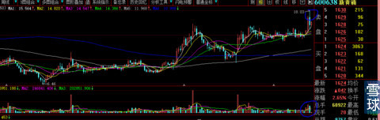

再次声明：本帖由于与现实太贴近，请千万不要转帖，特别是到外人的地方瞎贴。你如果实在听不进，老子把你也没有办法，只能像以前那样快速删帖。并且再也不写了。并请小伙伴们监督，把害群之马揪出来了拉黑他！
因为重要，所以要及时。本贴只给贴图，自己去复盘悟道。
提示几个要点：
1、什么位置突破才是我们要的东西？
2、突破后一般会有什么回踩动作？
3、回踩后最重要观察的是什么（我的经验是第三周突破后超越上周影线最高价后再买入才是高手中的高手，大大避免了失败的概率，呵呵，说者说着又开始絮叨了，本来说好让大家自己去悟）？
4、涨幅翻一倍的股票，至少需要多长时间？
5、周涨幅为什么前期总是被人为（大资金或者叫庄家）控制在9%—15之间？连续这样两周后为什么很多牛股会更加扩大周涨幅？为什么我们没有观察这些规律导致不抗涨？
5、11月21日发了一个皖能电力周线图的技术贴（股价走出来后就删除了，怕有人高位跟进后提问烦我），仅仅过了大半个月（我认为如果不去与其他股票攀比），就是这个时间的收益比，如果你每月都有这样的发现与操作，天啦，股市比你家的银行提款机还来劲（当时发帖主讲技术内容是：用周线过滤日线的抖动，让我们训练出一双洞穿实质看到黄金的火眼金睛）。
图一、2000年1月14日，000733振华科技大阴线周线，唯一的巨变是成交量，我们不要去管它是阴量还是阳量，那可是从K线可以明显看出人为阴跌15周后爆出的初期巨量啊（再看后几周，这个量是小巫见大巫）

图二、第二周价格越过上周影线最高价，就是嘹亮冲锋号角吹响，当然只有真正的战士才能听懂号角的召唤勇敢向前。

图三、从上图的最高价13.62元，用两周时间冲击到34.09元。你们谁告诉我这是价值投资（前1年担惊受怕潜入），还是投机的结果，他们的目的有何不同？价值观有何优劣之分？哪一个需要受到道德的谴责？

图四、xhp2007年2月9日，为什么这个位置的股票才值得关注？因为长期平台刚刚突破并且受到回踩的踏实。此时的最高价是9.6元。

图五、数周后，你们看看周线的坚挺！所以才有24.3元价格的出现。

图六、这是2014年12月15日今天xhp的周线。就如年轻的姑娘，如此一丝不挂的站在我们面前。一旦本周末越过18.5元，难道我们会眼瞎到分不出美丑？那么，本周末没有超越怎么办了？放弃呀！就这么简单。

待后续
 |
周线级别的技术贴。炒的是心 2014-12-15 23:20:52 |
Copyright © 1996-2014 SINA Corporation All Rights Reserved.